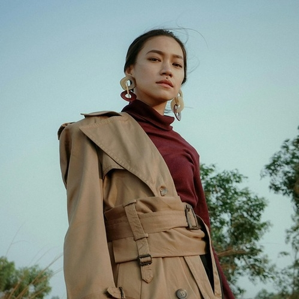
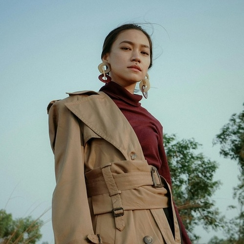

Hi, I'm
Mvce
pronounced /meɪs/.
About Mvce
I’m Mvce, born David Omoarebun Iseghoede, and I’m proud to call Edo State, Nigeria, my home. Growing up surrounded by music was a gift. My older siblings owned a recording studio, and I was immersed in the vibrant sounds of Afrobeats from an early age. That atmosphere sparked my passion for music, leading me to perform in primary school and start writing my own songs when I was just 13. In 2017, I released my debut single, "Wanna Be." It was an exciting moment that introduced me to a wider audience and marked the start of my journey as an artist. The positive feedback I received was incredibly motivating. Since then, I’ve had the privilege of collaborating with a variety of talented musicians, including a memorable project with German producer DJ Rapture and STARBOY alumni LAX. As I prepare for my first body of work set to drop in 2025, I’m eager to explore new sounds while staying connected to my roots.

 

Artistry
My artistry is all about blending heartfelt lyrics with catchy melodies and engaging storytelling. I draw inspiration from a wide range of genres—dancehall, pop, and R&B—all of which help shape my unique sound. I love experimenting with different musical styles while ensuring my voice shines through. Through my music, I aim to take listeners on a journey, sharing my experiences and emotions. With every song I create, I’m excited to share my journey and promise some fresh sounds in the near future. When i'm not making music I'm either playing games or harnessing my coding skills, i also enjoy trying out new delicacies and learning new instruments with the current one being the guitar.